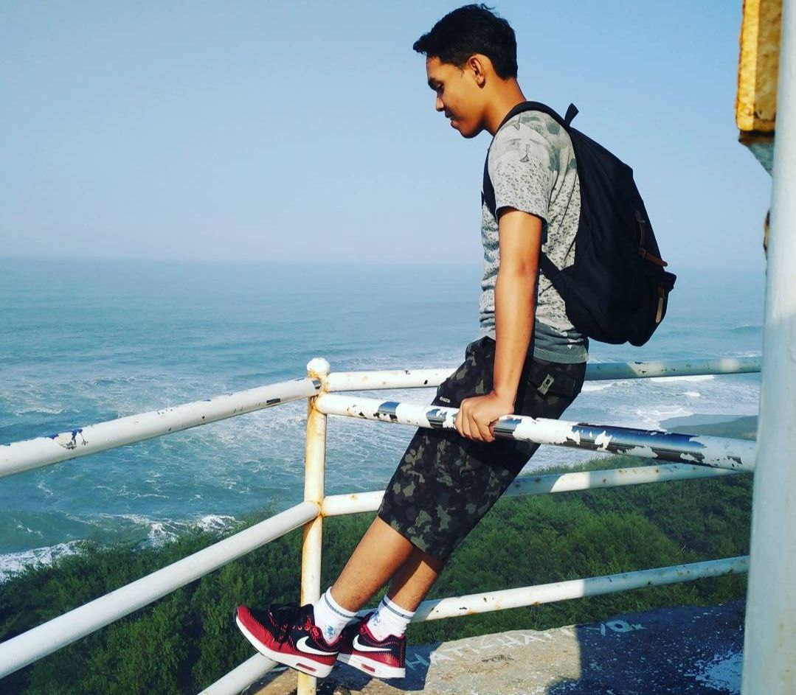
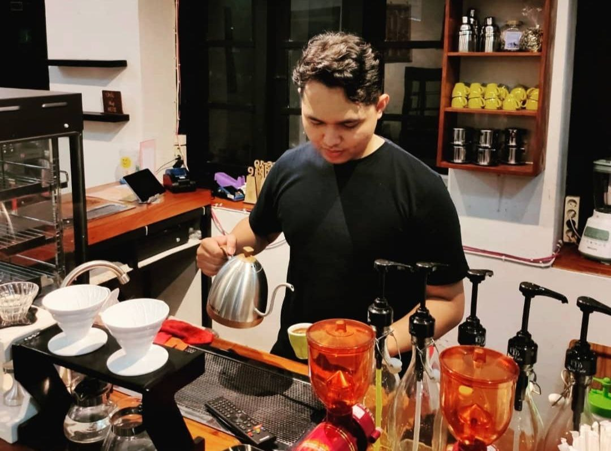
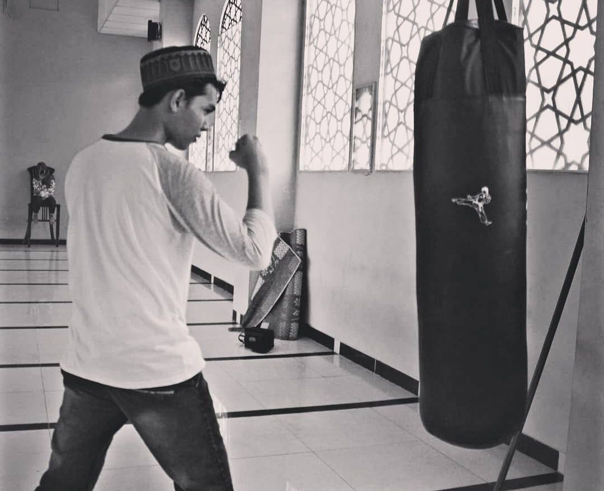
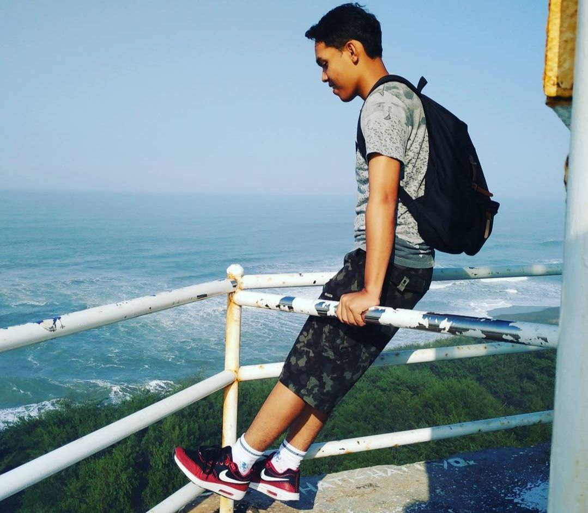
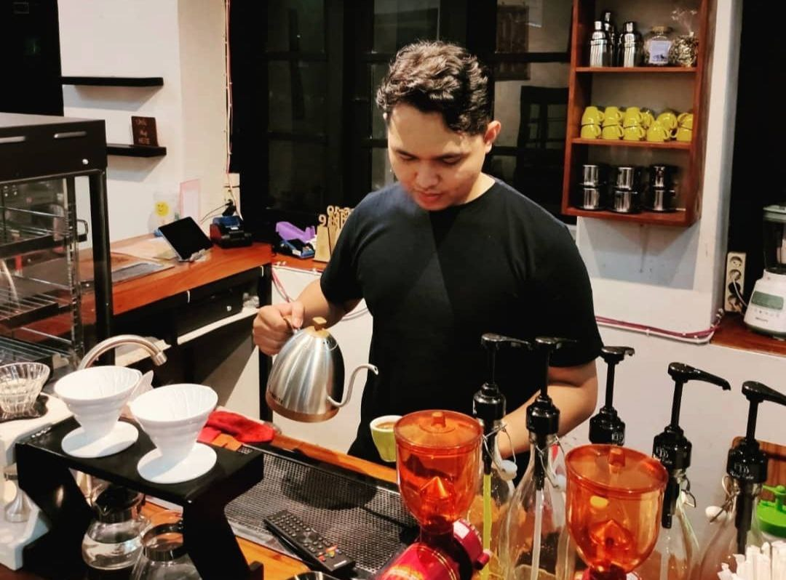
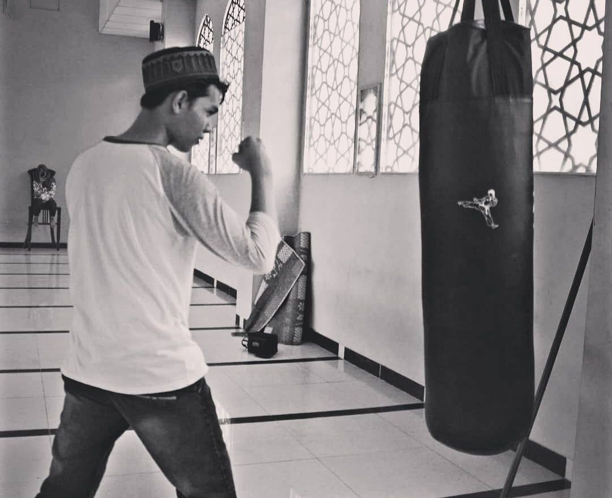

About Me
Hai, perkenalkan nama saya Riyan Dicky Satria, biasa dipanggil dicky saya berasal dari Kabupaten Klaten. saya lulusan Universitas Amikom Yogyakarta tahun 2022 bulan mei lalu. saya mengambil jurusan S1-Informatika dengan konsentrasi Pemrograman Web Developer. Profesi saya sekarang adalah sebagai PHP Engineer Web Developer. Saya terbiasa menggunakan framework Laravel dan databasenya mysql dan postgres. untuk bahasa saya menguasai php,javascript dan java meskipun belum expert, saya masih suka belajar sampai bisa.
Experiences
| Prestasi | Course | Project Pribadi | Project Kerja |
|---|---|---|---|
| Juara 1 Big Data (Universitas Amikom Yogyakarta) | React Developer pada program Profesional Academy Digitalent Scholarship 2022 | It's Me | 2 Project Instansi Pemerintah |
| GeekCamp Java Programmer | Dapurku | ||
| Front End Developer (HTML,CSS,Java Script) pada Program Fresh Graduate Academy |
Education

SD 2 N Prambanan Klaten
2006-2012

SMP 2 N Prambanan Klaten
2012-2015

SMA 1 N Prambanan Klaten
2015-2018
Universitas Amikom Yogyakarta
2018-2022
Skills
| Bahasa | Framework | Database | Sistem Operasi |
|---|---|---|---|
| PHP | Laravel | MYSQL | Windows |
| JavaScript | CI | Postgres | Ubuntu |
| Java | Wordpress | Mac | |
| HTML | |||
| CSS |
Interests
Fullstack Web Developer
Saya tertarik menjadi bagian fullstack web developer framework laravel, CI , Wordpres. karena semakin banyak tantangan semakin banyak ilmu yang didapat. dikarenakan saya memilih role ini karena saya sudah bekerja sebagai fullstack engineer php menggunakan framework Laravel

Backend Web Developer
Begitu dengan Backend Web Developer, untuk role ini pun saya juga tertarik karena saya juga mempelajari java spring boot ataupun framework Laravel. saya juga berpengalaman dalam membuat API, CRUD ,Clean Code, OOP ,Manage User Level, melakukan Backup DB dan masih banyak lagi.
.jpeg)
Frontend Web Developer
di role ini pun saya juga bisa dikarenakan sejak awal saya sudah menjadi fullstack web developer. untuk pengalaman sendiri saya mampu mengatur responsive berbagai macam ukuran layar dan melakukan slider dan pernah membuat berbagai macam dashboard maupun halaman depan.